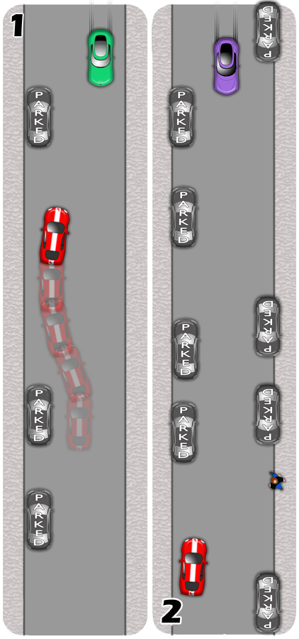
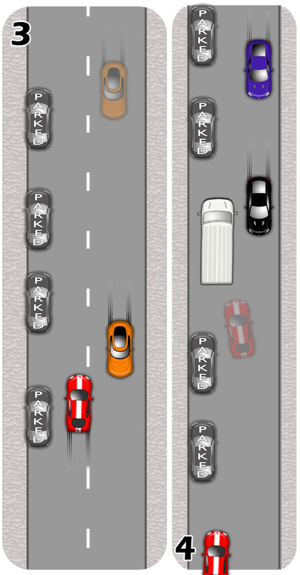

It is common to encounter obstructions in the road, be they parked cars, skips or roadworks. The road may then become too narrow for two vehicles to pass each other. Look ahead and assess the situation early
Recognise the general rule of priority. If the obstruction is on your side of the road, you should allow priority to the oncoming vehicle. However, don't assume this order and be prepared to give way whenever necessary.
If obstructions are on both sides of the road, nobody has priority. See below (2) for how to proceed.
Waiting vehicles may flash their headlights to encourage you to proceed. The official meaning of flashed headlights, is an alert of ones presence so never assume that it is a sign to go. However, it is practical to respond if you’re confident the flash was intended for your benefit. Be sure to check it is safe before proceeding.
If it is safe to, allow priority to vehicles coming up steep hills, even if it is their side of the road which is obstructed. It is much harder to stop and start going uphill than down, especially for large vehicles.
Be careful of following traffic which may mistake you for a parked car when you’re waiting. Always check your mirrors and consider a signal when setting off again.
Where the road is particularly narrow and you are forced to pass through a tight gap, slow the car down accordingly. The smaller the gap, the lower the speed should be.
Look out for dangers, like pedestrians stepping out from between parked vehicles, doors opening, vehicles pulling away and obscured side roads. Take extra care and slow down where necessary.
1.Obstructions On One Side
Because the obstruction is on its side of the road, the red car should allow priority to the green one.
In this scenario, the red car waits in a gap between the parked cars. Notice the position it’s taken, and how it steered there. Crucially, it has stopped no closer than a car length from the parked car in front and has already begun to steer back out. This enables the driver to get around easily when the opportunity arises and it also distinguishes them from the parked cars.
The green car recognises its priority on the approach but proceeds carefully.

2.Obstructions On Both Sides
The purple and the red car have no priority over each other because obstructions are on both sides of the road. It is therefore up to both drivers to look for a place to wait.
In this case, the red car takes a waiting position as the purple one proceeds, driving very carefully in case of hidden dangers.
A polite wave of gratitude as the vehicles pass each other is normal.
3.Meeting On Wider Roads
Though there are parked cars here, there is enough space for two vehicles to pass each other safely. The red car, driving slightly over the centre line, establishes this position early so that the oncoming orange car has time to respond.
The orange car, looking well up the road, recognises the situation and moves left a little, carefully driving closer to the kerb than usual.
Where the space is reduced, both drivers should slow down.

4.Planning
Plan carefully to avoid congestion on narrow roads. Don't follow a vehicle into a narrow space without being able to see for yourself that the road ahead is clear.